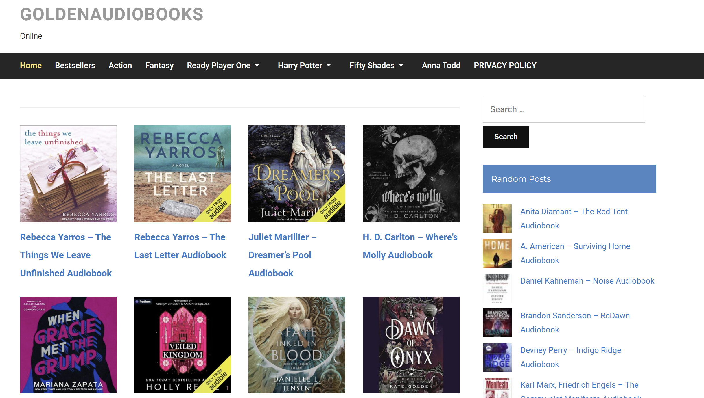

01
電繪
興趣:看電影、畫畫
國小時期第一次接觸到Rick Riordan的波西傑克森套書，從此一發不可收拾，
直到大學都還會追最新進度。
最喜歡的書是剃刀邊緣
最喜歡的電影是驀然回首
高中時開始接繪畫委託，累積了一些個人作品
爬取有聲書網站Goldenaudiobooks中Rick Riordan的作品
網址:https://goldenaudiobook.net/
def extract_page_data():
time.sleep(2)
items = driver.find_elements(By.CLASS_NAME, "title-post") #原css改class
for item in items:
title_element = item.find_element(By.TAG_NAME, "a")
title = title_element.text
link = title_element.get_attribute("href")
data_list.append({"標題": title, "連結": link})
print(title, link)
# 設定 Selenium
options = webdriver.ChromeOptions()
options.add_argument("--disable-blink-features=AutomationControlled")
driver = webdriver.Chrome(
service=Service(ChromeDriverManager().install()),
options=options
)
driver.get("https://goldenaudiobook.net/")
driver.maximize_window()
# 搜尋關鍵字
search_box = driver.find_element(By.CLASS_NAME, "search-field")
search_box.send_keys("Rick Riordan")
search_box.send_keys(Keys.ENTER)
# 等待搜尋結果載入
time.sleep(2)
# 存放資料
data_list = []
# 只抓當前頁面
extract_page_data()
driver.quit()
import pandas as pd
# 轉為 DataFrame 並輸出成 CSV
df = pd.DataFrame(data_list)
df.to_csv(r"C:\Users\11255\Downloads\book.csv", index=False, encoding="utf-8-sig")
banner style1A 50/50 vertical split between content and an image. Supports these modifiers:
| 標題 | 連結 |
| Rick Riordan – The Sun and the Star Audiobook | https://goldenaudiobook.net/rick-riordan-the-sun-and-the-star-audiobook/ |
| Rick Riordan – The Ship of the Dead Audiobook | https://goldenaudiobook.net/rick-riordan-the-ship-of-the-dead-audiobook/ |
| Rick Riordan – Camp Jupiter Classified Audiobook | https://goldenaudiobook.net/rick-riordan-camp-jupiter-classified-audiobook/ |
| Rick Riordan – Magnus Chase and the Sword of Summer Audiobook | https://goldenaudiobook.net/rick-riordan-magnus-chase-and-the-sword-of-summer-audiobook/ |
| Rick Riordan – Rebel Island Audiobook | https://goldenaudiobook.net/rick-riordan-rebel-island/ |
| Rick Riordan – Camp Half-Blood Confidential Audiobook | https://goldenaudiobook.net/rick-riordan-from-percy-jackson-audiobook/ |
| Rick Riordan – The Widower’s Two-Step Audiobook | https://goldenaudiobook.net/rick-riordan-the-widowers-two-step-audiobook/ |
| Rick Riordan – The Blood of Olympus Audiobook | https://goldenaudiobook.net/rick-riordan-the-blood-of-olympus-audiobook-free/ |
| Rick Riordan – Big Red Tequila Audiobook | https://goldenaudiobook.net/rick-riordan-big-red-tequila-audio-book/ |
| Rick Riordan – The Last Olympian Audiobook Online | https://goldenaudiobook.net/rick-riordan-the-last-olympian-audiobook-free-online/ |
| Rick Riordan – The Battle of the Labyrinth Audiobook | https://goldenaudiobook.net/rick-riordan-the-battle-of-the-labyrinth-audiobook-free-online/ |
| Rick Riordan – The Titan’s Curse Audiobook | https://goldenaudiobook.net/rick-riordan-the-titans-curse-audiobook-free-online/ |
| Rick Riordan – The Sea of Monsters Audiobook | https://goldenaudiobook.net/rick-riordan-sea-monsters-audibook-free-online/ |
| Rick Riordan – The House of Hades Audiobook Free | https://goldenaudiobook.net/rick-riordan-the-house-of-hades-audiobook-free/ |
| Rick Riordan – The Lost Hero Audiobook Online | https://goldenaudiobook.net/rick-riordan-the-lost-hero-audiobook-free-online/ |
| Rick Riordan – The Mark of Athena Audiobook Online | https://goldenaudiobook.net/mark-of-athena-audiobook/ |
| Rick Riordan – The Lightning Thief Audiobook Free | https://goldenaudiobook.net/rick-riordan-the-lightning-thief-audiobook-free-online/ |
| Rick Riordan – The Son of Neptune Audiobook | https://goldenaudiobook.net/rick-riordan-the-son-of-neptune-audiobook-free-online/ |
| Rick Riordan – The Trials of Apollo Audiobook Free Online | https://goldenaudiobook.net/rick-riordan-the-trials-of-apollo-audiobook-free-online/ |
| Rick Riordan – The Serpent’s Shadow Audiobook | https://goldenaudiobook.net/rick-riordan-the-serpents-shadow-audiobook-free-online/ |
| Rick Riordan – Percy Jackson’s Greek Heroes Audiobook | https://goldenaudiobook.net/rick-riordan-percy-jacksons-greek-heroes-audiobook-free-online/ |

一開始在寫爬蟲的時候，卡了一個地方超久——怎麼抓都抓不到我要的資料。原本我以為用 CSS Selector 去選那個元素就可以，但一直出現錯誤訊息，invalid selector 之類的，搞不清楚哪裡寫錯。後來仔細看了一下網頁原始碼，才發現我要抓的元素其實是用 class name，不是我原本以為的 CSS 選擇器。 換句話說，我用錯方法在選東西，難怪抓不到。後來我把程式碼改成用 find_elements(By.CLASS_NAME, "那個 class 名稱")，結果馬上就成功了，資料也順利抓下來。當下真的鬆了一口氣，這才發現光是選對「要抓的東西」就可以省掉很多debug時間。


{kind=link}
{kind=link}